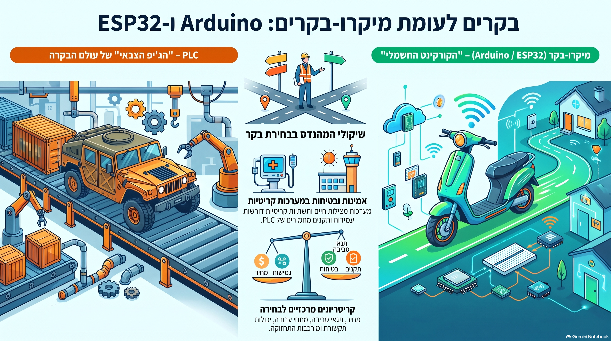

PLC מול Arduino ו-ESP32: שימושים, יתרונות וחסרונות, ואיך מהנדסים משתמשים בבינה מלאכותית בעבודה עם בקרים.
בסוף השיעור התלמידים יידעו להסביר מה ההבדל בין בקר תעשייתי (PLC) למיקרו-בקר (Microcontroller), ולבחור את המתאים לכל משימה.
| פריט | פירוט |
|---|---|
| קהל יעד | כיתה י', מגמת הנדסת חשמל (שנה ראשונה במגמה) |
| משך | 90 דקות (שיעור כפול). אפשר לקצר ל-45 דקות: לדלג על הפעילות המסכמת ולקצר את ההדגמה |
| ידע קודם | מעגל חשמלי בסיסי, מתג, נורה, מנוע. אין צורך בידע בתכנות |
| ציוד | מקרן, לוח. רצוי: לוח Arduino Uno עם נורית LED, ותמונה או סרטון של לוח PLC בארון חשמל |
המסר של הפתיחה: בקר הוא "המוח" של מערכת — הוא קולט מידע, מחליט ומפעיל.
"מה משותף למכונת כביסה, לרמזור בצומת, למכונת קפה ולפס ייצור במפעל של בקבוקי קולה?"
תנו לתלמידים 2–3 דקות לנחש. התשובה שאנחנו מכוונים אליה: בכולן יש רכיב שמקבל מידע, מחליט מה לעשות ומפעיל משהו — בקר.
שניהם עושים אותו תפקיד (קלט ← עיבוד ← פלט), אבל PLC נבנה לשרוד שנים במפעל, ומיקרו-בקר נבנה להיות קטן, זול וגמיש.
בקר לוגי מתוכנת (Programmable Logic Controller) — מחשב תעשייתי קשיח שמותקן בארון חשמל על מסילת DIN (DIN Rail).
מיקרו-בקר (Microcontroller, MCU) — שבב אחד קטן שמכיל מעבד, זיכרון וכניסות/יציאות. מחשב שלם בגודל של ציפורן.
המשימה: כשלוחצים על לחצן — נורה נדלקת.
void loop() {
if (digitalRead(2) == HIGH) { // is the button pressed?
digitalWrite(13, HIGH); // turn the light on
} else {
digitalWrite(13, LOW); // turn the light off
}
}
|----[ I0.0 ]-------------( Q0.0 )----|
Button Lamp
כלל אצבע: אם תקלה תעצור פס ייצור או תסכן אנשים — PLC. אם צריך מוצר קטן, זול ומחובר לרשת — מיקרו-בקר.
| תחום | PLC | מיקרו-בקר (Arduino / ESP32 ודומיהם) |
|---|---|---|
| מפעלים וייצור | פס מילוי בקבוקים, מסועים, זרועות רובוטיות בקו ייצור רכב | חיישני ניטור אלחוטיים שמדווחים על רטט או חום של מנוע |
| תשתיות ומים | תחנות שאיבה, מתקני התפלה, רמזורים בצומת | מונה מים חכם, חיישני איכות אוויר בעיר |
| חשמל ואנרגיה | בקרת תחנת משנה, הפעלת גנרטור חירום, שדות סולאריים גדולים | מעקב צריכת חשמל בבית, מונה חכם |
| מבנים | מעליות, מערכות מיזוג אוויר מרכזיות בקניון | בית חכם: תאורה, תריסים, שליטה מהסלולרי |
| מוצרי צריכה | — | מכונת כביסה, מיקרוגל, שלט טלוויזיה, שעון חכם, רחפן |
| חקלאות | מערכות השקיה מרכזיות, בקרת רפת רביות אוטומטית | חיישן לחות קרקע ששולח נתונים לענן |
הקריאו מכשיר, והתלמידים מצביעים PLC או מיקרו-בקר ומנמקים:
| מכשיר | תשובה |
|---|---|
| רמזור בצומת | הצג תשובהPLC |
| שעון חכם | הצג תשובהמיקרו-בקר |
| קו אריזה במפעל שוקולד | הצג תשובהPLC |
| מזגן בבית | הצג תשובהמיקרו-בקר |
| מעלית בבניין משרדים | הצג תשובהPLC |
| רובוט שואב אבק | הצג תשובהמיקרו-בקר |
אין "טוב יותר" — יש "מתאים יותר למשימה". מומלץ לבנות את הטבלה יחד עם הכיתה על הלוח, שורה אחר שורה. המחירים מקורבים ולשם המחשה בלבד.
| קריטריון | PLC (בקר תעשייתי) | מיקרו-בקר (Arduino / ESP32) |
|---|---|---|
| אמינות (Reliability) | ✔ מאוד גבוהה, עובד שנים ללא הפסקה | ✘ תלויה בתכנון המעגל והמארז |
| עמידות לסביבה | ✔ עמיד לחום, רעידות, אבק ורעש חשמלי (Noise) | ✘ רגיש לרעש, לחום וללחות |
| מחיר | ✘ יקר: מאות עד אלפי שקלים | ✔ זול: עשרות שקלים |
| גודל | ✘ גדול, דורש ארון חשמל | ✔ קטן מאוד, נכנס בכל מוצר |
| מתח עבודה | ✔ 24V תעשייתי, חיבור ישיר לחיישנים | ✘ 3.3V–5V, דרושים ממסרים ומעגלי התאמה |
| צריכת הספק | ✘ גבוהה יחסית | ✔ נמוכה, מתאים לסוללה |
| תכנות | ✔ שפת סולם מוכרת לחשמלאים ✘ תוכנות פיתוח של היצרן, לעתים בתשלום | ✔ גמישה מאוד (C++, Python), תוכנה חינמית ✘ דורשת ידע בתכנות |
| תקשורת ואינטרנט | פרוטוקולים תעשייתיים (Modbus, Profinet) | ✔ ESP32: Wi-Fi ו-Bluetooth מובנים |
| תחזוקה ותיקון | ✔ מודולרי, מחליפים כרטיס וממשיכים | ✘ לרוב מחליפים את כל הלוח |
| תקנים ובטיחות | ✔ עומד בתקנים תעשייתיים (דגמי בטיחות מיוחדים) | ✘ ללא אישור תעשייתי בברירת מחדל |
| מתאים במיוחד ל | מפעלים, תשתיות, מערכות שאסור שייעצרו | מוצרי צריכה, IoT, אב-טיפוס, פרויקטים בבית הספר |
כלי AI הם עוזר מקצועי מצוין — אבל המהנדס אחראי על התוצאה. מסר מרכזי לתלמידים: ה-AI הוא כמו טכנאי מתחיל מהיר ומוכשר, שמדי פעם טועה בביטחון מלא.
| שלב בפרויקט | מה ה-AI עושה | דוגמה לבקשה (Prompt) | מה המהנדס חייב לבדוק |
|---|---|---|---|
| 1. תכנון מערכת System Design | מציע ארכיטקטורה, רכיבים ובחירת בקר | "אני רוצה לבנות מערכת השקיה לגינה. איזה בקר ואילו חיישנים כדאי?" | האם הרכיבים קיימים ומתאימים למתח ולתקציב |
| 2. תכנון חשמלי | מסביר חיבורים, מחשב נגדים וזרמים | "כמה נגד צריך לנורית LED אדומה ביציאה של 5V?" | חישוב חוק אוהם בעצמכם — טעות כאן שורפת רכיבים |
| 3. כתיבת קוד Coding | כותב קוד Arduino/ESP32, מסביר אותו שורה אחר שורה, עוזר לתרגם לוגיקה לשפת טקסט מובנה (Structured Text) של PLC | "כתוב קוד ESP32 שמדליק מאוורר כשהטמפרטורה מעל 28 מעלות, והסבר כל שורה" | שמספרי הפינים (Pins) תואמים לחיווט האמיתי; להבין כל שורה לפני העלאה |
| 4. איתור תקלות Debugging | מפענח הודעות שגיאה, מציע סיבות אפשריות לתקלה לפי התסמינים | "המנוע לא מסתובב למרות שהקוד עולה. הנה הקוד ותיאור החיבור. מה לבדוק?" | לאמת במדידה אמיתית עם מולטימטר — ה-AI לא רואה את המעגל |
| 5. תיעוד ותחזוקה | כותב הערות לקוד, מסמכי הפעלה, מפרש קבצי לוג של תקלות | "סכם את רשימת ההתראות (Alarms) מהשבוע האחרון ומצא תבנית חוזרת" | שהמסקנות תואמות את הנתונים |
כל קבוצה (3–4 תלמידים) היא חברת ייעוץ הנדסית שקיבלה לקוח. על הקבוצה לבחור PLC או מיקרו-בקר, לנמק בשתי סיבות, ולהציע בקשה אחת שהיו שולחים לכלי AI כדי להתחיל.
| קבוצה | הלקוח והמשימה | תשובה מצופה (למורה) |
|---|---|---|
| א | מפעל משקאות — פס שממלא 2,000 בקבוקים בשעה, 24/7 | הצגPLC: אמינות, עבודה רציפה, סביבה תעשייתית |
| ב | סטארט-אפ — עציץ חכם ששולח לטלפון התראה כשהאדמה יבשה | הצגמיקרו-בקר (ESP32): זול, קטן, Wi-Fi מובנה |
| ג | עירייה — בקרת משאבת שאיבת מי ביוב | הצגPLC: תשתית קריטית, אסור שתעצור |
| ד | תלמיד במגמה — פרויקט גמר של רובוט עוקב קו | הצגמיקרו-בקר (Arduino): זול, גמיש, קל ללמוד |
| ה | בית מלון — ניטור טמפרטורה ב-50 חדרים + בקרת מיזוג מרכזי | הצגשילוב: חיישני ESP32 בחדרים, PLC למערכת המרכזית — תשובת "בונוס" |
מצאו בבית שלושה מכשירים שיש בהם מיקרו-בקר. לכל אחד, כתבו מה הקלט, מה העיבוד ומה הפלט.
האזינו לפרק בנושא בקרים ומיקרו־בקרים. אפשר להפעיל, להשהות ולדלג באמצעות פקדי הנגן.
